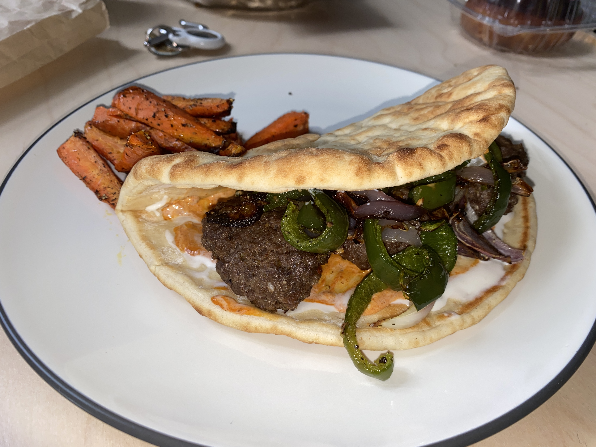

Sheet Pan Meatball Pita Sandwhiches

Description
Chefs! We're bringing you a series of recipes designed with ease of cooking and cleanup in mind, but without sacrificing the incredible flavors you’ve come to expect from a classic Blue Apron meal. To fill warm pitas, we’re baking meatballs (made with ground beef, panko, and herby za'atar) alongside sweet onion and smoky poblano pepper—all brought together by cooling tzatziki. It's all complete with a side of hearty carrot fries and a creamy harissa-spiced mayo dipper.
Ingredients
- 10 oz ground beef
- 2 pocketless pita
- 1 red onion
- 6 oz carrots
- 1 poblano pepper
- 1/4 cup panko breadcrumbs
- 1 tablespoon red harissa paste
- 2 tablespoon mayonnaise
- 1/2 cup tzatziki (cucumber-yogurt sauce)
- 1 tablespoon za'atar seasoning (ground sumac, sesame seeds, salt, ground thyme, whole dried oregano & crushed aleppo pepper)
Preperation
- Arrange two oven racks in the upper and lower thirds of the oven; preheat the oven to 450°F. Wash and dry the fresh produce. Peel the carrots; halve crosswise, then halve lengthwise. Halve and peel the onion; cut into 1/2-inch-wide wedges, keeping the layers intact. Cut off and discard the stem of the pepper. Halve lengthwise; remove the ribs and seeds, then cut into 1/2-inch strips. Thoroughly wash your hands and cutting board immediately after handling.
- Transfer the carrot pieces to a sheet pan. Drizzle with olive oil and season with salt and pepper; toss to coat and arrange in an even layer on one side of the sheet pan. Place the onion wedges and pepper pieces on the other side of the sheet pan of seasoned carrots; drizzle with olive oil and season with salt and pepper. Toss to coat; arrange in an even layer. Place on the upper oven rack and roast 14 to 16 minutes, or until browned and tender when pierced with a fork. Remove from the oven.
- In a large bowl, combine the beef, breadcrumbs, and za'atar; season with salt and pepper. Gently mix to combine. Form the mixture into 6 equal-sized meatballs. Arrange in an even layer on a separate sheet pan. Flatten each meatball to about a 1/2-inch thickness. Place on the lower oven rack and roast 11 to 13 minutes, or until the meatballs are browned and cooked through.* Remove from the oven.
- Meanwhile, in a bowl, combine the mayonnaise and harissa paste. Season with salt and pepper.
- Wrap the pitas in a damp paper towel. Microwave on high 30 seconds to 1 minute, or until heated through and pliable. Transfer the warmed pitas to a work surface and carefully unwrap. Spread the tzatziki onto the warmed pitas; top with the baked meatballs and roasted onion and pepper. Serve the finished pitas with the roasted carrots and harissa mayo on the side. Enjoy!
Private Notes
None